Novak Djokovic's Forehand: The Forward Swing¶
John Yandell¶
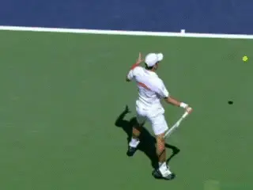
The forward swing: a blur of complicated elements occurring in about 1/10th of a second.
OK now it's money time. We've looked in detail at the general characteristics of Novak Djokovic's amazing forehand (link), then how he begins (link) and how he completes the preparation. (link.)
Now let's look at the forward swing. It's a blur that takes about 1/10th of a second and sends the ball hurtling toward his opponent at 90 mph plus and 2700 rpm. And during that brief interval many complex factors come into play that are impossible for the human eye to sort out. So let's see what the high speed video can tell us.
The amazing thing is that Novak's forehand, arguably the best in the world at the moment, actually has more factors in common with the alleged "old style" swing patterns of players such as Andre Agassi, than with the more "advanced" technical swings of Federer and Nadal. Yet he generates spin comparable to these two great players, and has one element that is probably more "advanced" than either.
It continues to stun me as I study technique in the pro game how much variety there really is, and how hard it is to make broad generalizations about the top players. Looking at Djokovic, his forehand is just as unique as Federer's or Nadal's--just in it's own way. (link for more on Roger's forehand and link for more on Nadal's.)
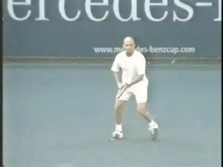
Is it possible Novak's forehand is in some ways most like Agassi's?
The reality is that the great players are constantly combining technical elements in different ways. The combinations vary from player to player, and also, for the same player from ball to ball.
This variety often leads players and coaches to make a fundamental mistake--generalizing from a variation. Often they look at one forehand and define it as the norm, when it may be at the extreme end on the variation spectrum.
To understand everything including all the variations in the forward swing, we need to look closely at 4 factors and the relationships between them. We have to see how these factors fit together, vary, and are emphasized to different degrees at different times.
These 4 elements are: the head position, the hitting arm configuration, the shape and length of the followthrough (including the wrap), and finally the forward rotation of the torso.
| **Four Factors in the |
|---|
| Forward Swing:** |
| Head Position |
| Hitting Arm Configuration |
| Followthrough and Wrap |
| Rotation of Torso |
So let's look at all 4 and see how Novak is different from Federer and Nadal--in some cases more "retro" and in at least one more "advanced."
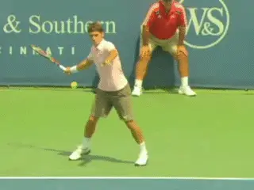
Federer's famous head position, sideways at contact and well after.
Head Position
One of the most noted points about Roger Federer's forehand is his head position, which is turned sideways at almost a 90 degree angle to the ball at contact. Nadal does something similar if less extreme.
Teaching players to create and hold this position has become a fashionable trend in teaching. But it's very different from what Djokovic does and I think that it is impossible to say it is a core commonality in the modern forehand.
If you look at Federer's head position, something that is at least as interesting as the position itself is how he gets there. As the forward swing starts he is still turning his head significantly to his right. He only arrives at that sideways position a tiny fraction of a second before the hit.
From there his head is stationary until the ball is a few feet off the racket. It definitely works for him, but try it yourself and see how difficult it is to create and hold, especially the part about moving the head to your right until just before the hit.
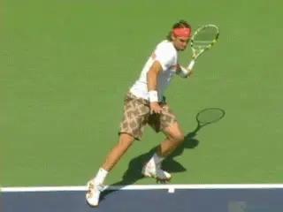
Nadal turns his head sideways as well, again maintaining that position after contact.
Nadal's head is also turned sideways at contact, but not quite as far is Federer's. And like Roger, he is turning it to his side up until a few milliseconds before the hit. He also gets it still just before contact and he holds it for a significant interval after the ball leaves the strings.
Novak's Head
So difficult or not, should that be the new norm? Possibly, but Novak does something quite different. As the forward swing starts Djokovic turns his head far less to his right than Federer or Nadal. And if you look closely you can see that before contact he has already started to turn the head slightly back forward in the direction of the hit. So his head is actually moving slightly when he hits the ball and immediately thereafter.
Again in this respect he closer to Agassi whose head is far also far less sideways, and who also turns his head immediately after the hit. So how important is it really to turn the head to that more extreme sideway position? Does it really have to be dead still during the hit? And when should it start to turn back?
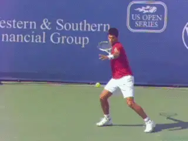
Novak's head: not nearly as sideways at contact, and moving during and shortly thereafter.
What effect might the head position have on the actual contact? That's something we can actually examine, based on a previous article. (link.)
In that article we looked at the actual point of contact on the string bed and compared these same three players. We saw that Novak was actually the most precise and consistent when it came to the contact point between the ball and the string bed.
Yet his head position is also the most forward, and is actually moving slightly during the hit. Federer and Nadal appear to keep the head dead still, but there contact points were somewhat less precise than Djokovic.
So to make a point we've made many times before, it is difficult to make generalizations about the advantages of various technical differences among great players. Is Roger's head position what makes his forehand so effective, or is it an idiosyncratic element?
Would a different head position be as effective, or possibly, even more effective? We won't know for sure until we clone Roger and train him both ways. It's true that most top players do get the head relatively still for at least a fraction of a second around contact, but how they do this and the exact head position and how long they hold it may not be determinant in creating great contact.
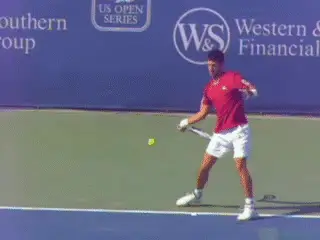
Elbow bent, wrist laid back, before during and after contact--most times.
Hitting Arm
When we look at Djokovic's hitting arm configuration we can see a similar issue to that of the head position. Because Nadal and Federer both hit with straight arms, there has been a tendency to conclude that this configuration is somehow superior, more advanced, the future of the forehand, etc, etc.
Which it may very well be. Or not. Possibly quantitative research will eventually give us more information there about any actual relative advantages.
The one fact we can state with certainty, however, is that Djokovic hits with the classic configuration of so many top players, what I labeled the "double bend" many years ago. And the double bend configuration is apparently good enough to make Djokovic's forehand equal to either Nadal's or Federer's.
By double bend I mean that as Novak starts forward to the ball, his elbow is bent and tucked in toward his body, and the wrist is laid back. This is the same configuration used by former greats Agassi, Pete Sampras, as well as many of the current top players with huge forehands.
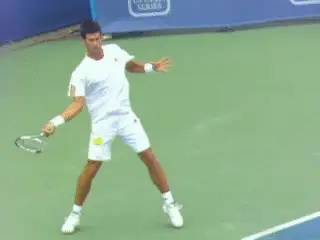
Novak's head: not nearly as sideways at contact, and moving during and shortly thereafter.
The interesting thing about the double bend in Djokovic's forward swing is how it works in combination with his extreme grip which we analyzed in the first article. (link.) When we did our first high speed studies of the wrist position on the forehand years ago, the footage showed that for the top players we studied, the wrist stayed laid back before, during and after the contact.
Sometimes on the forward swing it flexed slightly forward, but it still maintained an angle that was clearly laid back around the contact. That study was based on multiple players, including Sampras and Agassi, but none that had grips as extreme as Djokovic or Nadal.
With the more extreme grips there appears to be more variety in the wrist movement. For Djokovic and Nadal, many or most forehands retain the laid back wrist position at contact. But on others the wrist has flexed forward to a neutral position or something close.
Looking at more and more footage over the years I found you could actually see this same phenomenon even with a player with a very conservative grip like Federer. His wrist sometimes flexs forward from an extreme laid back position, and sometimes reaches neutral, although at contact on the vast majority of his balls, his wrist still remained laid back at contact.
This may in part be a function of the great looseness and relaxation that seems characteristic of high velocity modern swings. Again, the more you study, the harder it really is to make absolute statements.
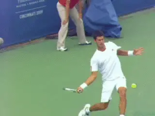
Watch how the wrist approaches neutral but is pushed into a laid back position at contact.
Brian Gordon, master of 3D analysis, has shared his views with me on this flex movement and there are two interesting facts. First, he believes that the flex in the wrist has to do with the positioning of the angle of the racket face for shot direction. And second that this movement is not related to racket head speed generation, contributing less than 5%.
What I believe all this means is that after a player like Djokovic sets up the double bend at the start of the forward swing, the flex will then happen naturally--or not--as he moves through the contact and out in the followthrough. I still believe that the idea that the top players are consciously "snapping" the wrist forward past neutral for power and or spin is a myth, despite how widespread that thought remains in coaching and television commentary.
You can see compelling evidence of this in some of the high speed examples from Djokovic as well from other top players where the wrist actually moves back after contact. Watch in the animation as the wrist starts to flex forward reaching almost neutral at contact. But then the impact of the collision actually forces the angle back to a laid back position.
Hard to believe that this would happen with a strong, conscious forward snap. Instead I think it shows how ballistic the forward swings have become with minimal tension in the hitting arm throughout the forward swing.
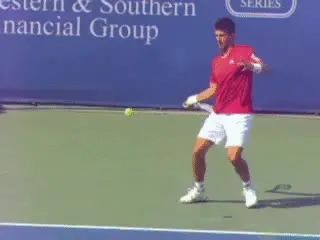
The full variety of possible modern finishes, but...
Followthrough
Looking at our new high speed footage of Novak forehands, it's obvious that, like other top players, he has the full variety of finishes. He hits heavy wipers that wrap around his shoulder. He also hits wipers that finish somewhat lower wrapping around the torso. He hits reverse finishes that cross back over to the right side of his body, but, surprisingly, far fewer than most other players.
But one of the most distinctive thing about Djokovic's forehands is the predominance of the over the shoulder "old style" finish that we associate with great former players such at Andre Agassi.
That finish is generally associated with flatter hitting. We know from our studies of spin levels that players like Agassi and Pete Sampras averaged slightly under 2000 rpms on their forehands. (link.)
On the other hand Federer and Nadal, with more "modern" finishes have spin rates that are averaging 25% to 50% higher than that or more, in the range of 2700rpm to 3200rpm. We might logically assume that these higher spin rates are at least partially related to the predominance of the new finishes that go around the shoulder or the torso and/or over the head.
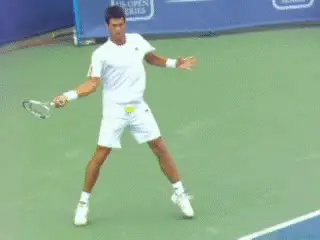
Almost half of Novak's forehands finish in the supposedly obsolete over the shoulder position.
But for Djokovic, this isn't the case. His spin rates are roughly equal to or slightly higher than Federer, averaging 2800rpm. The interesting thing is that he is able to generate this average consistently with the over the shoulder finishes, with spin rates equally the wiper wraps.
For example, on about 60 forehands where the spin rates were measurable, the highest percentage of his finishes, a little less than half, were over the shoulder. About 30 percent were lower around the shoulder.
Fewer still, about 20 percent, were more extreme wipers, finishing around the torso. And less than 5 percent were reverses finishing over the head.
Even more interesting were the spin rates on the various finishes. On the over the shoulder forehand, Novak averaged 2800rpm, almost identical to the lower finishes around the shoulder, which were 2700rpm. The more extreme wiper finishes around the torso were slightly higher at 3000rpm.
His reverse finishes were actually the flattest at 2200rpm. Unlike Nadal who hits the reverse as virtually a norm, for Novak the reverses were more defensive and hit only occasionally.
The point here is that going upward and over the shoulder, Novak generates as much average spin as Federer who almost always goes around the shoulder or around the torso.
The chart tells the tale:
Type of Number of Range Average Finish Finishes RPM Over the 27 1900-4100rpm 2800rpm Shoulder
Around the 19 1800-3800rpm 2700 Shoulder
Around the 13 1740-4200rpm 2700 Torso
Reverse 3 1700-3000rpm 2200
The question is why? Especially when you consider that Novak tends to stand in closer to the baseline than most players, a position sometimes associated with flatter hitting.
What do swing plane and racket speed have to do with the effectiveness of Djokovic's forehand?
One possible answer is the grip. As we saw in the first article, you might conclude from Novak's court position that he hit with a conservative grip. Instead, our analysis showed that his grip was as extreme as Nadal's. That extreme grip could correlate with a steeper swing plane that could be the explanation.
But sheer racket speed is probably also a factor. Once again, we have veered into territory that would require quantification for clearer answers. How steep and how fast with what grip produces how much spin--and how much ball speed for that matter?
Forward Rotation
But one intriguing factor to consider is the amount forward torso rotation Novak uses. And once again here he is confounding conventional analysis. We might expect the over the shoulder finish to pair with less total forward rotation, again, more on the model of Agassi, who usually finished with the rear shoulder only slightly past parallel to the baseline.
For Djokovic, the shoulder position at the finish is much more extreme. From the turn, he rotates the back right shoulder forward and around in the forward swing until it is facing the opponent. That's around 180 degrees of forward rotation, more on average than either Federer or Nadal.
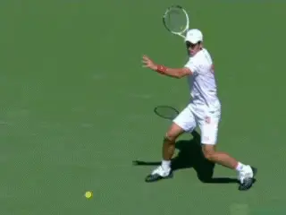
Tremendous forward shoulder rotation with open and neutral stance.
The front shoulder comes around that far about 75 percent of the time. So it's even more prevalent than his over the shoulder finish. He also does it from all the stance variations. When he steps forward with a neutral stance, he rotates both feet into the air and too his left so the torso can come all the way around.
So after looking at the first three "retro" elements in his forehand--the head position, the hitting arm position, and the over the shoulder finish, now suddenly we find that when it comes to body rotation, Novak is actually more extreme or "modern" than either Nadal or Federer.
There is no way to prove it of course without having more measured data, but my opinion is that this additional uncoiling of the body in the forward swing may giveNovak extra punch that contributes to his spin rates and ball speed.
Extension
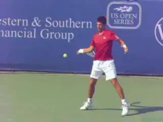
The characteristic extension position on the power drive.
But now let's get back to one point of commonality with both Federer and Nadal. This is Djokovic's great forward extension in the swing on the power drive. Despite the differences in his emphasis on various technical components, Novak reaches the same characteristic point on the forward swing when he is trying to drive through the ball that we have found with so many great players--including Agassi, Federer and Nadal.
The checkpoints are simple. The wrist is at about eye level. The racket hand has reached the left edge of the torso. The upper arm is parallel and the forearm is about a 30-45 degree angle to the court. There is great spacing between the hand and the left shoulder.
The over the shoulder wrap, happens after he reaches this extension, and is the natural deceleration phase in the motion. As we discovered long ago, trying to force the racket over the shoulder too soon truncates the motion and reduces the player's ability to reach the extension point. (link.)
Reviewing
So there you have it--the full story on Novak's forehand. But before we go, let's try to summarize what we have seen in this 4 part series. Djokovic tends to play up on the baseline and take the ball early Federer,and he hits with similar spin rates. But surprisingly he does this with a very extreme grip that is as far under the handle, or more under the handle, than Nadal--a player who typically stays much further back and hits with significantly greater spin.
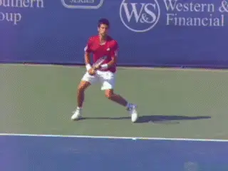
The unique combination of elements makes it Novak's forehand.
Like all great players, Novak has great early preparation with his body turn and his use of the left arm stretch, and has the ability to position in all stances with a wide variety of initial step combinations. But Novak is different in that he has an unusual backswing turning the racket face virtually parallel to the back fence. His hand and arm also go slightly more behind his body than most other top men's players.
Novak can use his forehand to more than hold his own with Federer and Nadal--heralded as the modern forehand technicians--but there are many elements in his forward swing that are more similar to previous "old style" great players. These are his head position, his double arm hitting arm structure, and his over shoulder finishes. Yet one aspect of his forehand, his torso rotation in the forward swing, is as extreme or more extreme than any player in the modern game.
So it is truly amazing to see how the top players combine so many possibilities in so many different ways. And for players and coaches, video reality sometimes raises as many questions as it answers. But the reality is that probably in the end the great players tend to figure these things out for themselves.
Eventually yet another player will come along, make it to the top with a great forehand and become the poster boy for "modern" technique. For now we've seen a fascinating range of the possible with Roger, Rafa and Novak. Stay tuned.

John Yandell is widely acknowledged as one of the leading videographers and students of the modern game of professional tennis. His high speed filming for Advanced Tennis and TPA have provided new visual resources that have changed the way the game is studied and understood by both players and coaches. He has done personal video analysis for hundreds of high level competitive players, including Justine Henin-Hardenne, Taylor Dent and John McEnroe, among others.
In addition to his role as Editor of TPA he is the author of the critically acclaimed book Visual Tennis. The John Yandell Tennis School is located in San Francisco, California.
← The Full Turn and Backswing | Advanced Tennis Index | Part 1 →